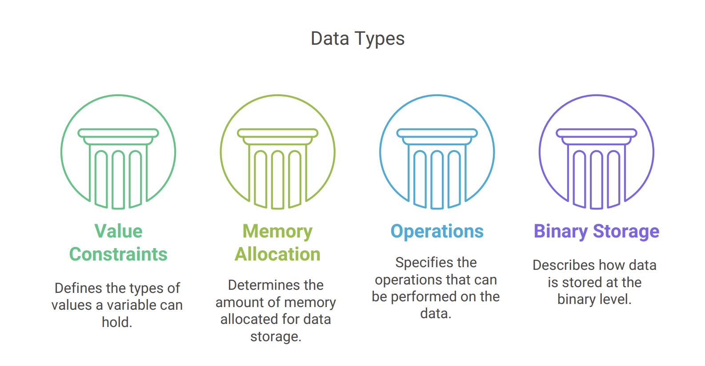
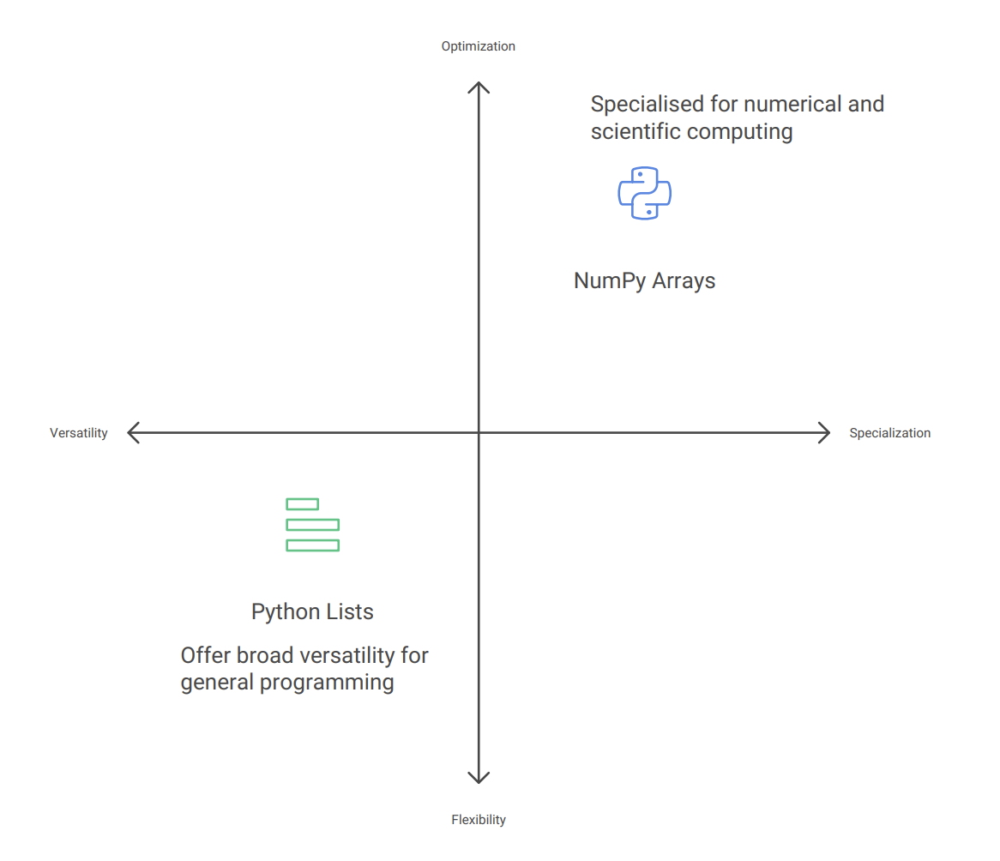

NumPy Data Types
Objectives
Explain the fundamental concept of data types and their importance in computing
Compare and contrast Python’s general data types with NumPy’s specialized data types
Identify the key NumPy data types relevant to bioinformatics applications
Apply data type conversion techniques to optimize NumPy arrays
Explore different NumPy data types for different bioinformatics use cases
Instructor note
Teaching : 15 min
Demo: 10 min
Introduction to Data Types
Data types are fundamental categories that define how computers interpret and store information in memory

Data types directly impact:
Program correctness
Inappropriate data types can lead to errors or unexpected behavior
Computational performance
Different data types have different processing speeds
e.g., Choosing appropriate data types helps optimize memory usage
In scientific computing and bioinformatics specifically, where we often work with large datasets, choosing the right data type becomes even more critical for both accuracy and performance.
Python vs NumPy Data Types
Python and NumPy both provide data type systems, but they serve different purposes and have important distinctions:

Note
This specialization allows NumPy to provide exactly what’s needed for scientific applications without unnecessary overhead. For example, summing a million numbers can be 10-100x faster using NumPy arrays compared to Python lists.
More info
Additional notes
Python vs NumPy - Variety and Focus
Python data types offer broad versatility for general programming:
Integers (
int): Whole numbers without size limitationFloating-point numbers (
float): Decimal numbersStrings (
str): Text dataBooleans (
bool): True/False valuesLists, dictionaries, sets, and Complex data structures
NumPy data types are specialized for numerical and scientific computing:
More precise control over numeric representation (int8, int16, int32, int64, etc.)
Greater variety of floating-point precisions (float16, float32, float64)
Memory-efficient representations of text and boolean values
Specialized types for complex numbers and datetime values
Memory Management:
Python’s approach to memory:
Each value comes with extra information (type information, tracking system - reference count)
Python arranges values wherever it finds room in memory
It’s like having sticky notes scattered across your desk - flexible but takes extra space
NumPy’s approach to memory:
Values are stored together in one organized block
Each value has a fixed, predictable size
It’s like having numbers written in a grid-style notebook - compact and easier to access
This organization also works better with how your computer naturally processes information
In bioinformatics, where we might analyze gene expression data with millions of values, NumPy’s memory efficiency becomes critical.
import numpy as np
import time
# Create a larger dataset for more noticeable timing differences
size = 10000000 # 10 million elements
# Create Python list and NumPy array
python_list = [1] * size
numpy_array = np.ones(size, dtype=np.int8)
# Function to multiply each element by 2
def double_python_list(my_list):
return [x * 2 for x in my_list]
# Timing the Python list operation
start_time = time.time()
doubled_list = double_python_list(python_list)
python_time = time.time() - start_time
print(f"Python list processing time: {python_time:.4f} seconds")
# Timing the NumPy array operation
start_time = time.time()
doubled_array = numpy_array * 2 # Element-wise multiplication
numpy_time = time.time() - start_time
print(f"NumPy array processing time: {numpy_time:.4f} seconds")
# Calculate the speed improvement
speedup = python_time / numpy_time
print(f"NumPy is approximately {speedup:.1f}x faster")
Type Homogeneity
Demo
# Python collections like lists can contain mixed types:
mixed_list = [1, "DNA", True, 3.14] # Different types in one list
print(type(mixed_list), type(mixed_list[0]), type(mixed_list[1]), type(mixed_list[2]), type(mixed_list[3]))
# NumPy arrays enforce type homogeneity:
# All elements converted to the same type (float64)
np_array = np.array([1, 2, 3.14, 4])
print(np_array.dtype)
Output
<class 'list'> <class 'int'> <class 'str'> <class 'bool'> <class 'float'>
float64
This homogeneity enables:
Predictable memory usage
Optimized vectorized operations
Simplified data processing logic
For bioinformatics applications, this homogeneity helps ensure consistency when processing large datasets of gene expression values, sequence reads, or alignment scores.
Key NumPy Data Types
Integer Types
Stores whole numbers only, no decimals - Integer
np.int32 & np.int64 (64-bit signed integer):
np.int32Range: -2,147,483,648 to 2,147,483,647np.int64Range: -9,223,372,036,854,775,808 to 9,223,372,036,854,775,807Primary uses in bioinformatics:
Storing chromosome positions
Indexing into large sequences
Demo
# Storing chromosome positions for a set of genes
gene_positions = np.array([45123, 67845, 123456, 789012], dtype=np.int32)
print(gene_positions.dtype)
print(f"int8 range: {np.iinfo(np.int8).min} to {np.iinfo(np.int8).max}")
print(f"int16 range: {np.iinfo(np.int16).min} to {np.iinfo(np.int16).max}")
Output
int32
int8 range: -128 to 127
int16 range: -32768 to 32767
More info
Additional notes
np.uint8 (8-bit unsigned integer):
Uses 8 bits (1 byte) of memory for each number
Extremely memory-efficient compared to default integer types (usually 32 or 64 bits)
Smaller data types can lead to faster computations
It can only represent non-negative numbers (Unsigned)
Range: 0 to 255
Primary uses in bioinformatics:
Compact storage for quality scores in FASTQ data
Representing nucleotide bases with numeric codes
Storing small count data efficiently
Example:
# Representing DNA as numeric codes (A=1, C=2, G=3, T=4)
dna_sequence = np.array([1, 2, 3, 4, 1, 1, 2], dtype=np.uint8)
When working with small integers, using np.uint8 instead of np.int64 can reduce memory usage by 8x, which becomes significant when processing millions of sequence reads.
Floating-Point Types
np.float32 (Single precision); np.float64 (double-precision float):
np.float32(Single precision)32 bits of precision (~7 significant decimal digits)
np.float64(double-precision float)64 bits of precision (~15-17 significant decimal digits)
Primary uses in bioinformatics:
Storing p-values from statistical tests
Representing gene expression values
Calculating evolutionary distances
Storing probabilities in models
More info
Additional notes
# Gene expression values from RNA-seq experiment
expression_values = np.array([0.0, 12.5, 45.7, 0.13, 92.1], dtype=np.float64)
print(expression_values.dtype)
# For floating-point types, use np.finfo()
print(f"float16 range: {np.finfo(np.float16).min} to {np.finfo(np.float16).max}")
print(f"float32 range: {np.finfo(np.float32).min} to {np.finfo(np.float32).max}")
print(f"float64 range: {np.finfo(np.float64).min} to {np.finfo(np.float64).max}")
print(f"longdouble range: {np.finfo(np.longdouble).min} to {np.finfo(np.longdouble).max}") # Special cases requiring maximum available precision, Rarely used due to platform inconsistency
Output
float64
float16 range: -65504.0 to 65504.0
float32 range: -3.4028234663852886e+38 to 3.4028234663852886e+38
float64 range: -1.7976931348623157e+308 to 1.7976931348623157e+308
longdouble range: -1.7976931348623157e+308 to 1.7976931348623157e+308
Bioinformatics often requires high precision for statistical calculations, making float64 a common choice despite its larger memory footprint.
Boolean Type
np.bool_ (Boolean type):
Values: True or False
Primary uses in bioinformatics:
Creating masks for filtering data
Representing presence/absence of features
Storing binary outcomes from statistical tests
Marking regions of interest in genomic data
Boolean arrays in NumPy are extremely useful for data filtering and are more memory-efficient and faster than equivalent Python list comprehensions.
String Types
<U# (Fixed-length string):
Stores character data with fixed length
Primary uses in bioinformatics:
Storing DNA/RNA sequences
Representing gene names, IDs, or annotations
Storing taxonomic information
Demo
# Array of gene IDs
gene_ids = np.array(['BRCA1', 'TP53', 'EGFR', 'KRAS'])
print(gene_ids.dtype)
x = np.array(["1234567890", "12345678901234567890"])
print(x.dtype)
# Output
# dtype('<U20')
Output
<U5
<U20
NumPy’s string types are less flexible than Python strings but more memory-efficient when working with large collections of fixed-length identifiers.
External resources - Working with Arrays of Strings And Bytes
Data Type Conversion and Specification
NumPy provides several ways to specify or convert data types:
Explicit Type Declaration
# Create array with specific type
counts = np.array([1, 2, 3, 4], dtype=np.int32)
# Convert existing array to new type
float_counts = counts.astype(np.float64)
Checking Data Types
# Check the data type of an array
data = np.array([1.0, 2.0, 3.0])
print(data.dtype) # Output: float64
Automatic Type Inference
NumPy attempts to choose an appropriate type based on the data:
Demo
np.array([1, 2, 3]) # Creates int64 array
np.array([1.0, 2.0, 3.0]) # Creates float64 array
np.array([True, False, True]) # Creates bool array
np.array(['A', 'C', 'G', 'T']) # Creates string array
Practical Considerations for Bioinformatics
Memory Optimization
For large genomic datasets, memory usage is critical:
Demo
# Comparison of memory usage for different types
import numpy as np
# Create arrays with different types
int64_array = np.ones(1000000, dtype=np.int64)
int8_array = np.ones(1000000, dtype=np.int8)
# Check memory usage
print(f"int64 array: {int64_array.nbytes / (1024 * 1024):.2f} MB")
print(f"int8 array: {int8_array.nbytes / (1024 * 1024):.2f} MB")
The int8 array uses 1/8th the memory of the int64 array, which can make the difference between an analysis running in memory or needing extra resources.
Performance Considerations
Data types affect computation speed:
Demo
# Summing integers vs floats
int_array = np.arange(10000000, dtype=np.int32)
float_array = np.arange(10000000, dtype=np.float32)
%time int_sum = np.sum(int_array)
%time float_sum = np.sum(float_array)
Integer operations are generally faster than floating-point operations, which can be important when processing whole-genome data.
Type Compatibility in Bioinformatics Pipelines
Different bioinformatics tools may expect specific data types:
Visualization libraries may require float64 values
Machine learning models may work best with specific types
File formats may impose type constraints
Being aware of these requirements helps create more robust analysis pipelines.
Key Takeaways
Keypoints
NumPy’s specialized data types provide significant advantages for bioinformatics applications:
Efficiency - Both in terms of memory usage and computational performance
Precision - Control over numeric representation ensures accurate calculations
Compatibility - Designed to work well with other scientific computing libraries
Consistency - Type homogeneity helps prevent errors in large datasets
By choosing appropriate data types, bioinformaticians can:
Process larger datasets in memory
Run analyses faster
Ensure computational accuracy
Build more robust analysis pipelines
Understanding the distinctions between Python’s general-purpose types and NumPy’s specialized numeric types is essential for effective scientific programming in bioinformatics.